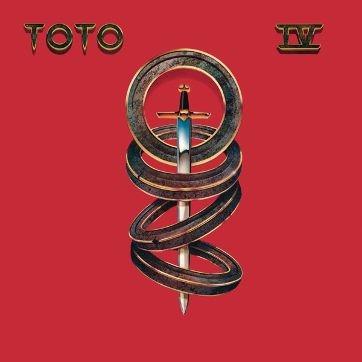

Toto IV
Toto
Upgrade idea: The original Terre Haute / George Marino / Sterling Sound pressing is the reference for this album and widely regarded as the best-sounding version. Earlier stampers (1A, 1B) are preferred by collectors, but the `1F` is still first-lacquer-generation and holds up well. No definitive audiophile reissue exists; the original US pressing is the go-to.
Production notes
Tracklist (Discogs)
| A1 | Rosanna | 5:32 |
| A2 | Make Believe | 3:43 |
| A3 | I Won't Hold You Back | 4:56 |
| A4 | Good For You | 3:18 |
| A5 | It's A Feeling | 3:06 |
| B1 | Afraid Of Love | 3:52 |
| B2 | Lovers In The Night | 4:27 |
| B3 | We Made It | 3:56 |
| B4 | Waiting For Your Love | 4:13 |
| B5 | Africa | 4:55 |
Tracklist (Apple Music)
| 1 | Rosanna | 5:30 |
| 2 | Make Believe | 3:43 |
| 3 | I Won't Hold You Back | 4:53 |
| 4 | Good for You | 3:17 |
| 5 | It's a Feeling | 3:05 |
| 6 | Afraid of Love | 3:51 |
| 7 | Lovers In the Night | 4:25 |
| 8 | We Made It | 3:55 |
| 9 | Waiting for Your Love | 4:12 |
| 10 | Africa | 4:55 |
Personnel & credits
- David Paich — Arranged By [Horn Arrangements]
- Jerry Hey — Arranged By [Horn Arrangements]
- David Paich — Arranged By [Orchestral Arrangements By]
- James Newton Howard — Arranged By [Orchestral Arrangements By]
- Marty Paich — Arranged By [Orchestral Arrangements By]
- Bobby Kimball — Backing Vocals [Background Vocals]
- David Paich — Backing Vocals [Background Vocals]
- Steve Lukather — Backing Vocals [Background Vocals]
- Timothy B. Schmit — Backing Vocals [Background Vocals]
- Tom Kelly — Backing Vocals [Background Vocals]
- David Hungate — Bass
- Mike Porcaro — Cello
- James Newton Howard — Conductor [Strings Conducted By]
- Lenny Castro — Congas, Percussion
- Jeff Porcaro — Design Concept [Album Package]
- Jeff Porcaro — Drums, Percussion
- Al Schmitt — Engineer
- Greg Ladanyi — Engineer
- Tom Knox — Engineer
- Bruce Heigh — Engineer [Additional Engineering At Hogg Manor]
- David Paich — Engineer [Additional Engineering At Hogg Manor]
- Dick Gall (2) — Engineer [Additional Engineering At Hogg Manor]
- Steve Porcaro — Engineer [Additional Engineering At Hogg Manor]
- Steve Lukather — Guitar, Vocals
- Joe Spencer (2) — Illustration
- David Paich — Keyboards, Vocals
- Steve Porcaro — Keyboards, Vocals
- Bobby Kimball — Lead Vocals
- David Paich — Lead Vocals
- Steve Lukather — Lead Vocals
- Steve Porcaro — Lead Vocals
- Joe Porcaro — Marimba
- George Marino — Mastered By
- Greg Ladanyi — Mixed By
- Joe Porcaro — Percussion
- Glen Christensen — Photography By
- Jim Hagopian — Photography By
- Sam Emerson — Photography By
- Steve Lukather — Piano
- Toto — Producer
- Roger Linn — Programmed By [Synthesizer Programming]
- Al Schmitt — Recorded By
- Greg Ladanyi — Recorded By
- Tom Knox — Recorded By
- Jamie Ledner — Recorded By [At Record One]
- Lon LeMaster — Recorded By [At Record One]
- Niko Bolas — Recorded By [At Record One]
- David Leonard — Recorded By [At Sunset Sound]
- Peggy McCreary — Recorded By [At Sunset Sound]
- Terry Christian — Recorded By [At Sunset Sound]
- John Kurlander — Recorded By [Strings Recorded By]
- Jim Horn — Recorder [Recorders]
- Jim Horn — Saxophone
- Jon Smith (5) — Saxophone
- Tom Scott — Saxophone
- The Martyn Ford Orchestra — Strings [Strings Performed By]
- Ralph Dyck — Synthesizer
- Joe Porcaro — Timpani [Tympani]
- James Pankow — Trombone
- Gary Grant — Trumpet
- Jerry Hey — Trumpet
- Bobby Kimball — Vocals
- Joe Porcaro — Xylophone
Identifiers
- Barcode: 0 7464-37728-1 (Text)
- Barcode: 074643772815 (Scan)
- Pressing Plant ID: T1 (Etched in runouts)
- Rights Society: ASCAP
- Matrix / Runout: AL 37728 (Label, side A)
- Matrix / Runout: BL 37728 (Label, side B)
- Matrix / Runout: T1 AL B̶L̶-37728-1F STERLING (Runout side A, variant 1)
- Matrix / Runout: T1 BL-37728-1F STERLING (Runout side B, variant 1)
- Matrix / Runout: T1 BL-37728. 1D STERLING (Runout side A, variant 2)
- Matrix / Runout: T1 BL-37728. 1E STERLING (Runout side B, variant 2)
- Matrix / Runout: T1 AL-37728· 1E STERLING N D o (Runout side A, variant 3)
- Matrix / Runout: T1 BL-37728· 1D STERLING E1 o (Runout side B, variant 3)
- Matrix / Runout: o T1 AL-37728-1D STERLING B1 (Runout side A, variant 4)
- Matrix / Runout: T1 BL-37728-1E STERLING B2 (Runout side B, variant 4)
Notes
"T1" etched in runouts denotes a Columbia-Terre Haute pressing.
℗ © 1982 [l211334]
Runouts are etched, except for "STERLING", the Customatrix "o" and occasional plate characters, e.g., "D" in variant 3, side A, which are stamped.
Toto IV is Toto’s fourth studio album, released in April 1982 on Columbia Records, and the commercial and artistic peak of their career. It won six Grammy Awards at the 1983 ceremony — including Album of the Year — making it one of the most decorated albums in Grammy history. Produced by the band, recorded across Sunset Sound, Record One, Abbey Road Studios, and Hogg Manor, the album is a showcase of extraordinary studio craft: impeccable rhythm sections, lush orchestral arrangements by David Paich, James Newton Howard, and Marty Paich, and a cast of contributing musicians that reads like a who’s-who of LA session royalty. “Rosanna” and “Africa” became two of the most iconic singles of the decade; “I’ll Be Over You” and “Waiting for Your Love” rounded out a remarkably consistent tracklist.
Engineered by Al Schmitt and Greg Ladanyi — two of the finest recording engineers of the era — the album’s sonic quality matched its artistic ambition. Mastered by George Marino at Sterling Sound, New York, with lacquer cutting also at Sterling. Marino was one of the defining mastering engineers of the 1980s and 1990s, responsible for an extraordinary run of landmark records; his work on Toto IV gives the album its characteristic warmth and punch.
This 1982 original US pressing was pressed at the Columbia Records Pressing Plant, Terre Haute, Indiana (
T1in the deadwax). The matrixBL-37728-1F STERLINGidentifies this as Side B, first-lacquer-generation (1),Fstamper — a mid-run copy from the original pressing run, cut directly from the George Marino lacquer at Sterling Sound.About this 1982 US pressing (Vinyl, LP): Columbia catalog FC 37728, original 1982 US pressing. Terre Haute pressing plant. Mastered by George Marino at Sterling Sound. Matrix AL-37728-1F STERLING (Side A) / BL-37728-1F STERLING (Side B). Barcode 07464377281.